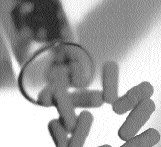

| Contents | Terminology | Alcohol | Effects | Hangovers | Alcoholism | Development | Treatment | Others |
Treatment
Treatment of the illness increasingly recognizes alcoholism itself as the primary problem needing attention, rather than regarding it as always secondary to another, underlying problem. Specialized residential treatment facilities and separate units within general or psychiatric hospitals are rapidly increasing in number. As the public becomes more aware of the nature of alcoholism, the social stigma attached to it decreases, alcoholics and their families tend to conceal it less, and diagnosis is not delayed as long. Earlier and better treatment has led to encouragingly high recovery rates.
In addition to managing physical complications and withdrawal states, treatment involves individual counseling and group therapy techniques aimed at complete and comfortable abstinence from alcohol and other mood-changing drugs of addiction. Such abstinence, according to the best current evidence, is the desired goal, despite some highly controversial suggestions that a safe return to social drinking is possible. Addiction to other drugs, particularly to other tranquilizers and sedatives, poses a major hazard to alcoholics. Antabuse, a drug that produces a violent intolerance for alcohol as long as the substance remains in the body, is sometimes used after withdrawal. Alcoholics’ Anonymous, a support group commonly used for those undergoing other treatment, in many cases helps alcoholics to recover without recourse to formal treatment.
Despite these encouraging signs,
estimates of the annual number of deaths related to excessive drinking
exceed 97,000 in the United States alone. Economic costs related to alcoholism
are at least $100 billion a year. Additional data are needed on various
societal costs of alcoholism as well as on the costs of various modes of
treatment compared with their actual results.